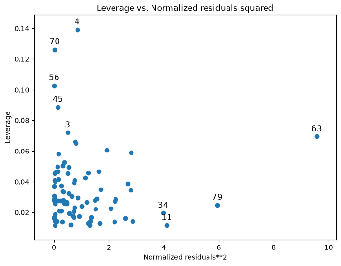

Regression diagnostics#
This example file shows how to use a few of the statsmodels regression diagnostic tests in a real-life context. You can learn about more tests and find out more information about the tests here on the Regression Diagnostics page.
Note that most of the tests described here only return a tuple of numbers, without any annotation. A full description of outputs is always included in the docstring and in the online statsmodels documentation. For presentation purposes, we use the zip(name,test) construct to pretty-print short descriptions in the examples below.
Estimate a regression model#
[1]:
%matplotlib inline
[2]:
import matplotlib.pyplot as plt
import numpy as np
import pandas as pd
import statsmodels.formula.api as smf
import statsmodels.stats.api as sms
from statsmodels.compat import lzip
# Load data
url = "https://raw.githubusercontent.com/vincentarelbundock/Rdatasets/master/csv/HistData/Guerry.csv"
dat = pd.read_csv(url)
# Fit regression model (using the natural log of one of the regressors)
results = smf.ols("Lottery ~ Literacy + np.log(Pop1831)", data=dat).fit()
# Inspect the results
print(results.summary())
OLS Regression Results
==============================================================================
Dep. Variable: Lottery R-squared: 0.348
Model: OLS Adj. R-squared: 0.333
Method: Least Squares F-statistic: 22.20
Date: Tue, 23 Jun 2026 Prob (F-statistic): 1.90e-08
Time: 10:30:27 Log-Likelihood: -379.82
No. Observations: 86 AIC: 765.6
Df Residuals: 83 BIC: 773.0
Df Model: 2
Covariance Type: nonrobust
===================================================================================
coef std err t P>|t| [0.025 0.975]
-----------------------------------------------------------------------------------
Intercept 246.4341 35.233 6.995 0.000 176.358 316.510
Literacy -0.4889 0.128 -3.832 0.000 -0.743 -0.235
np.log(Pop1831) -31.3114 5.977 -5.239 0.000 -43.199 -19.424
==============================================================================
Omnibus: 3.713 Durbin-Watson: 2.019
Prob(Omnibus): 0.156 Jarque-Bera (JB): 3.394
Skew: -0.487 Prob(JB): 0.183
Kurtosis: 3.003 Cond. No. 702.
==============================================================================
Notes:
[1] Standard Errors assume that the covariance matrix of the errors is correctly specified.
Normality of the residuals#
Omni test:
[3]:
name = ["Chi^2", "Two-tail probability"]
test = sms.omni_normtest(results.resid)
lzip(name, test)
[3]:
[('Chi^2', np.float64(3.7134378115972093)),
('Two-tail probability', np.float64(0.15618424580304607))]
Jarque-Bera test:
Kurtosis below is the sample kurtosis, not the excess kurtosis. A sample from the normal distribution has kurtosis equal to 3.
[4]:
name = ["Jarque-Bera test", "Chi^2 two-tail prob.", "Skew", "Kurtosis"]
test = sms.jarque_bera(results.resid)
lzip(name, test)
[4]:
[('Jarque-Bera test', np.float64(3.3936080248431884)),
('Chi^2 two-tail prob.', np.float64(0.18326831231663174)),
('Skew', np.float64(-0.4865803431122353)),
('Kurtosis', np.float64(3.0034177578816363))]
Autorelation#
Durbin-Watson test:
DW statistic always ranges from 0 to 4. The closer to 2, the less autocorrelation is in the sample.
[5]:
name = ["Durbin-Watson statistic"]
test = [sms.durbin_watson(results.resid)]
lzip(name, test)
[5]:
[('Durbin-Watson statistic', np.float64(2.019216822454508))]
Breusch–Godfrey test for serial correlation:
[6]:
name = [
"Breusch-Pagan Lagrange multiplier test statistic",
"p-value",
"f-value",
"f p-value",
]
test = sms.acorr_breusch_godfrey(results)
lzip(name, test)
[6]:
[('Breusch-Pagan Lagrange multiplier test statistic',
np.float64(2.9930462802518827)),
('p-value', np.float64(0.9815872336580141)),
('f-value', 0.26322177681170056),
('f p-value', 0.9871702599878219)]
Multicollinearity#
Condition number
[7]:
name = ["Condition Number"]
test = [np.linalg.cond(results.model.exog)]
lzip(name, test)
[7]:
[('Condition Number', np.float64(702.1792145490066))]
Influence tests#
Once created, an object of class OLSInfluence holds attributes and methods that allow users to assess the influence of each observation. For example, we can compute and extract the first few rows of DFbetas by:
[8]:
from statsmodels.stats.outliers_influence import OLSInfluence
test_class = OLSInfluence(results)
test_class.dfbetas[:5, :]
[8]:
array([[-0.00301154, 0.00290872, 0.00118179],
[-0.06425662, 0.04043093, 0.06281609],
[ 0.01554894, -0.03556038, -0.00905336],
[ 0.17899858, 0.04098207, -0.18062352],
[ 0.29679073, 0.21249207, -0.3213655 ]])
Explore other options by typing dir(influence_test)
Useful information on leverage can also be plotted:
[9]:
from statsmodels.graphics.regressionplots import plot_leverage_resid2
fig, ax = plt.subplots(figsize=(8, 6))
fig = plot_leverage_resid2(results, ax=ax)

Other plotting options can be found on the Graphics page.
Heteroskedasticity tests#
Breush-Pagan test:
[10]:
name = ["Lagrange multiplier statistic", "p-value", "f-value", "f p-value"]
test = sms.het_breuschpagan(results.resid, results.model.exog)
lzip(name, test)
[10]:
[('Lagrange multiplier statistic', np.float64(4.893213374094015)),
('p-value', np.float64(0.08658690502351964)),
('f-value', np.float64(2.5037159462564675)),
('f p-value', np.float64(0.08794028782672769))]
Goldfeld-Quandt test
[11]:
name = ["F statistic", "p-value"]
test = sms.het_goldfeldquandt(results.resid, results.model.exog)
lzip(name, test)
[11]:
[('F statistic', np.float64(1.1002422436378148)),
('p-value', np.float64(0.3820295068692514))]
Linearity#
Harvey-Collier multiplier test for Null hypothesis that the linear specification is correct:
[12]:
name = ["t value", "p value"]
test = sms.linear_harvey_collier(results)
lzip(name, test)
[12]:
[('t value', np.float64(-1.0796490077759802)),
('p value', np.float64(0.28346392475692195))]